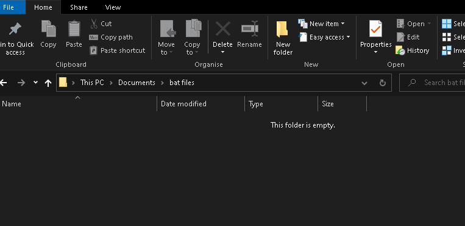

Here are some examples:
ytarchvie-prompt.bat - Prompt for the URL of a stream wait for start time, use cookies.txt, embed meta data, and use highest quality avalible, and saved it in a folder called W:\Youtube Archive.
@echo off
TITLE ytarchive: Best Quality, Wait for Start, Use Cookies
Echo:ytarchive: Best Quality, Wait for Start, Use Cookies
cd /d W:\Youtube Archive
echo Saving the file to %CD%
set /p yturl= "Stream URL:"
@echo on
ytarchive -w --cookies "C:/yt/cookies.txt" --add-metadata %yturl% best
ytarchive-monitor-###.bat - Monitor a channel and download best avalible format when a stream starts. Once it finish downloading and saving, it'll go right back to monitor.
@TITLE ytarchive-monitor Name
@cd /d w:\Youtube Archive\Name
ytarchive --cookies "C:/yt/cookies.txt" --add-metadata --monitor-channel https://www.youtube.com/channel/######/live best
ytdlp-ArchiveChannel.bat - Download everything on a channel / playlist, record what has been downloaded so it can be stopped and resumed / updated, use cookies, get best quality (mp4 preferred)
@TITLE ytarchive-monitor Full Playlist/Channel Archive
@cd /d w:\Youtube Archive\Name
yt-dlp --ignore-config --cookies "C:/yt/cookies.txt" --download-archive "C:/yt/database.txt" --embed-metadata --embed-thumbnail -f "bestvideo[ext=mp4]+bestaudio[ext=m4a]/best[ext=mp4]/best" https://www.youtube.com/channel/######
Steps to making bat files:
